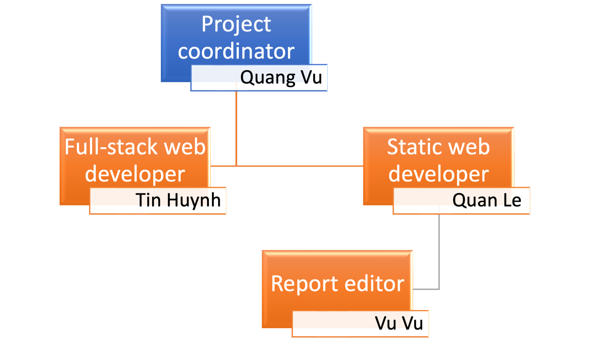

-
Team Name - FaS
Short for Friendly and Simple, it is pronounced similarly to the word "fast," which is fitting because our website aims to provide quick results and convenient access to its users. The name FaS captures the essence of what our website strives to achieve: offering a friendly and simple user experience that allows people to find what they are looking for in a fast and efficient manner. We believe that by offering a website that is easy to use and navigate, we can help our users save time and effort in finding the information or resources they need.
-
Personal Information
- Quang Vu
- Quan Le
- Tin Huynh
- Vu Vu
Teams account: Quang Vu
Email: S3981278@rmit.edu.vn
Quang has a strong interest in cloud computing and database management. As a student, he is currently focused on learning and understanding more about these fields, through researching the latest trends and developments, and gaining a deeper understanding of how these technologies are used in industry.
Therefore, his responsibilities are not only as a project coordinator who makes schedules for meetings and deadlines, but also as an administrator who oversees maintaining and improving the integrity and safety of our work. Another task of Quang is to make the final decision so that our milestone should be in line with our scope as well as complying with any relevant standards. He’s also in charge of identifying the risks of our project.
Despite the demands of his studies, Quang makes time for his hobbies such as playing badminton and watching sports to maintain a good balance between schoolwork and leisure time.Teams account: Quan Le
Email: s3978949@rmit.edu.vn
Quan is interested in web development. He aims to become a full-stack developer and is currently taking on the role of developing the static website for our report. He is in charge of ensuring that the website is visually appealing and user-friendly, as well as being technically sound.
As the main web developer for the static website of the project, he will be responsible for designing, coding, and modifying websites, from layout to function. In addition to his role as a web developer, he also takes responsibility for the communication part in the project's description.
Quan is also a sports enthusiast, particularly in flag football. He has been competing in flag football for a few years and has developed a strong passion for the sport. He believes that playing flag football improves his teamwork, leadership, and time management skills, which are all important attributes for a full-stack developer.Teams Account: Tin Huynh
Email: s3962053@rmit.edu.vn
Tin has deep interest in AI, machine learning, and deep learning. He is the full-stack developer and a product visionary for this project. He came up with the theme and idea for our project, a cooking website that aims to make cooking easier and faster. He takes responsibility for all the visionary and concept as well as development aspect related to the project such as the topic and motivation, landscape, aims, scope and limits, plan and progress, and product outcomes.
As the full-stack developer, he is in charge of building the prototype of the website. He also works closely with the team to ensure that the website's functions are working effectively and meets the requirements of the project. His interest in AI and machine learning is particularly important in developing the recipe recommendation system for the future. He also actively thinking of ways to utilize AI and Machine Learning to improve the user experience, such as by incorporating natural language processing or using reinforcement learning to improve recipe recommendations.
Tin is also fascinated with Japanese culture and enjoys learning more about it by exploring anime, manga, listening to music, discovering deep into the culture and practices Kendo. He believes learning from different cultures can help him to expand his perspective and approach to problem-solving.Teams Account: Vu Vu
Email: S3929202@rmit.edu.vn
Vu is highly interested in studying code and working with computers. He has a clear goal of becoming a programmer for mobile apps and operating systems in the future. He is passionate about data structures and has spent a lot of time exploring databases, honing his abilities in utilizing various data-handling applications. With his knowledge on computer languages, especially on MySQL and Python, he already has a rudimentary grasp of these languages and he's eager to expand his knowledge by conducting extensive research and gaining more expertise in database administration.
In our project, Vu's main responsibility is to test the website, this includes the functionality of the website, user interface and usability testing, performance and scalability testing, and compatibility and security testing. He'll be responsible for creating test cases and scenarios, executing tests, and documenting test results. He's also tasked to identify the skills and jobs needed for the future when the project is further developed.
Vu's attention to detail, technical expertise, and problem-solving skills makes him well-suited for this role, as it requires a good understanding of the website's functionality and the ability to identify potential issues. He will use his knowledge of the website and his understanding of how it should work to identify any problems and work with the development team to resolve them.
As a hobby, Vu spends a lot of time exploring databases and studying different data structures, and it's also he enjoys spending time exploring new technologies, learning about new programming languages and different tools. He has a keen interest in staying up-to-date with new developments in the field of databases and computer languages. He's looking forward to build his skills and knowledge to be a top-performing programmer. -
Group Processes
As a group, we have developed a number of processes to ensure that we are working effectively and efficiently towards our common goals. We make a conscious effort to solicit input and ideas from all team members and value the diversity of perspectives and experiences that each member brings to the table. When making decisions, we take the time to consider the ideas and suggestions of all team members and strive to reach consensus. We also encourage collaboration and teamwork, and make an effort to support one another whenever problems or issues arise. To keep everyone informed and on track, we have implemented regular check-ins and progress updates, and make an effort to identify and address any potential roadblocks or challenges that we may face. Overall, our group processes have allowed us to work effectively as a team and achieve our goals in a timely and efficient manner.
-
Career Plans
- Quang Vu
- Tin Huynh
- Quan Le
- Vu Vu
- Career Plans Comparison
Quang’s career plan is to start as a Junior Database Administrator or Junior Cloud Engineer in a company, this will give him an opportunity to work with experienced professionals and learn the technical and organizational aspects of managing and maintaining databases, storage and other data-related technologies in a professional environment.
As he gains more experience, he can progress to become a Senior Database Administrator or Senior Cloud Engineer, where he will be responsible for the design, implementation and maintenance of complex databases, storage systems and cloud computing platforms. He will also be responsible for capacity planning, performance monitoring, troubleshooting, backups, disaster recovery and to ensuring data integrity, security and availability.
To keep up with the latest advancements in the field, Quang plans to continue his education through graduate-level programs in database management or cloud computing. This will allow him to stay informed of the most recent technologies and industry best practices. Additionally, he intends to gain professional certifications such as Oracle, AWS or Microsoft, which will increase his credibility and make him a more competitive candidate for potential employers.Tin's career plan centers around his interest in AI and machine learning. He plans to begin his career as a software engineer or developer at a technology company that specializes in these areas. This will provide him with the opportunity to work on practical projects and gain hands-on experience while learning from experienced professionals. As he gains more experience, he hopes to take on more advanced roles such as AI developer, Machine Learning Engineer or Product Manager, where he would be responsible for the development and integration of the technology in products and work closely with stakeholders and other teams to deliver high-quality, innovative and user-friendly products.
To further his skills, Tin is considering pursuing advanced education such as a graduate degree in AI or machine learning, to deepen his knowledge and stay current with industry developments. He also plans on earning professional certifications in areas like artificial intelligence, machine learning, deep learning and big data to enhance his qualifications and career prospects.
Ultimately, Tin's career plan is to focus on the continuous development of his skills and knowledge in the field of AI, machine learning and deep learning, as well as gaining real-world experience in product development, in order to build a successful career in this field. He wishes to apply his knowledge and skills to different industries, such as education, healthcare, and entertainment, exploring ways in which AI, machine learning and deep learning can improve and benefit different areas of life.Quan’s career plan is to start as a junior web developer in a company. This will give him an opportunity to work on real-world projects, gain hands-on experience, and learn from experienced professionals. With his passion and eagerness to learn, he can quickly gain expertise and move on to become a full-stack developer, who will be responsible for developing the complete web application.
As he grows in experience, he aims to take on more senior roles such as a team leader, software architect or lead developer in which he would be responsible for leading a team of developers, providing technical guidance, and ensuring the smooth delivery of the projects. He would be responsible for ensuring the technical feasibility of UI/UX designs and be able to work on the improvement of the development process and the quality of the product.
To stay current with the latest industry developments, it is beneficial for him to pursue continuing education in the field of web development, attending workshops, webinars, or taking online courses to enhance his skills. He also aims also pursue certifications such as the Google Developer, Oracle, or AWS certifications, that can help him to stand out in the industry and improve his job prospects.Vu’s career plan is to start as a junior software developer or software engineer in a company, with a focus on mobile app development or operating systems development. This would give him the opportunity to work on real-world projects, gain hands-on experience, and learn from experienced professionals. He can then progress to become a full-fledged developer, who will be responsible for the full development of the mobile app or operating system.
As he gains more experience, he can take on more senior roles such as a lead developer, team lead, or even project manager where he would be responsible for leading a team of developers, providing technical guidance, and ensuring the smooth delivery of projects. He would also work closely with stakeholders, such as clients, to gather requirements and create technical specifications.
To stay ahead of industry trends and keep his skills up to date, Vu plans to invest in ongoing education in the realm of mobile app or operating system development. This could include attending workshops, webinars, or taking online courses. Additionally, to set himself apart from other candidates, Vu aims to acquire certifications from technology leaders such as Google, Apple or Microsoft, that will increase his competitiveness and make him more attractive to potential employers.The main differentiator between the plans is the specific field that each of us is interested in. Quang is focused on database management and cloud computing, Tin on AI, machine learning, and deep learning, Vu on mobile app and operating systems development and Quan on web development. We also have different roles and responsibilities within each person’s field, for instance Quang's role will focus more on managing and maintaining databases and storage systems, while Tin's role will focus on the development and integration of the AI and machine learning.
Job duties
Tin, as an AI Engineer, would have the task of creating, constructing, and implementing artificial intelligence systems. His duties may include creating machine learning models, natural language processing techniques, and computer vision systems.
As a Cloud Engineer, Quang would be responsible for designing, building, and maintaining the infrastructure of a cloud computing system. This could include tasks such as configuring and managing cloud-based servers, setting up and maintaining virtual networks, and ensuring the security and scalability of the system.
As a Web Developer, Quan would be in charge of creating, constructing and keeping up websites. His responsibilities could include authoring code in languages like HTML, CSS, and JavaScript, utilizing frameworks like React or Angular, and linking with back-end systems to produce interactive web pages.
Vu, as a Mobile App Developer or OS Manager, would have the task of creating, developing, and maintaining mobile applications or operating systems. His duties may include writing code in languages such as Swift or Kotlin, creating user interfaces, and testing apps on various devices and platforms.Work environment
As an AI Engineer, Tin may involve working in a research and development setting, such as a technology company or academic institution. He may work closely with data scientists and other engineers to design and implement AI systems. He would also be required to have a strong understanding of mathematics and computer science, as well as knowledge of programming languages and frameworks commonly used in AI such as Python, Tensorflow, Pytorch.
As a Cloud Engineer, Quang may involve working in a fast-paced, technical environment, such as a technology company or a software development firm. He would be part of a team that is responsible for designing, building, and maintaining cloud-based systems, and would typically work closely with other engineers, developers, and IT professionals. Quang would also typically be required to have a strong understanding of cloud computing platforms like AWS, Azure, and GCP, as well as experience with infrastructure as code and automation tools.
As a Web Developer, Quan may work in a variety of settings, including technology companies, digital agencies, or as a freelancer. He would work in a team environment, collaborating with other developers, designers, and project managers to create and maintain websites. Quan would also be required to have a strong understanding of web development languages, frameworks and tools, such as HTML, CSS, JavaScript, React, Angular and Git.
As a Mobile App Developer or OS Manager, Vu may work in a variety of settings, including technology companies, mobile app development firms, or as a freelancer. He would work in a team environment, collaborating with other developers, designers, and project managers to create and maintain mobile apps or operating systems. Vu would also be required to have a strong understanding of mobile development languages, frameworks and tools, such as Swift, Kotlin, Java, Xcode and Android Studio.Career opportunities
Tin, as an AI Engineer, has a wide range of career opportunities. He can work in technology companies, research institutions, or even start his own business. Tin could work on a variety of projects, such as developing machine learning models for natural language processing, computer vision, speech recognition, or predictive analytics. He could also work on developing AI-powered products and services like personal assistants, self-driving cars, and intelligent robots.
Quang, as a Cloud Engineer, could work on projects such as designing and building cloud-based systems for companies in various industries, such as healthcare, finance, and e-commerce. He could also work on developing cloud-based products and services like cloud storage, cloud-based databases, and cloud-based applications.
Quan, as a Web Developer, could work on a variety of projects, such as building websites for small businesses, creating e-commerce sites, or designing web-based applications for large corporations. He could also work on developing web-based products and services, like web-based games, social networks, and online marketplaces.
Vu, as a Mobile App Developer or OS Manager, could work on a variety of projects, such as building mobile apps for small businesses, creating mobile games, or designing mobile-based applications for large corporations. He could also work on developing mobile-based products and services, like mobile payment systems, location-based services, and mobile-based social networks.
-
Link to our group's website
https://snitcoding.github.io/Final_report_G14/ -
Link to our group’s Git repository
https://github.com/snitcoding/Final_report_G14/ -
How the audit trail on Github repoitory reflects our group's work
Our team has created a static web page that is based on the content of the report. Base on the Git repository, we can clearly see that our workflow was divided into three stages: completing the report content, defining the website’s content, structure and layout, and styling and modifying the website.
In the first stage of the project, all team members including Tin, Quan, Quang, and Vu used a shared Google Doc to collaborate on the report content. We worked together to gather the necessary information, research, and write the report. The specific contributions of each team member can be seen in how we added and edited the content in a shared Google Doc. This allows us to identify the active collaboration and coordination among team members, and also the specific areas of the report each one had more participation.
In the second stage, Quan, being the main web developer, was responsible for defining the structure and layout of the static website. He used the structure of the report as a guide, and added all of the content from the report into the website in HTML format. He was responsible for creating the basic structure and layout of the website, adding all the necessary headings, sections, and images. The commit history in this stage shows that he was actively involved and made sure to include meaningful and specific commit messages that describe the changes made in each commit, that way, it makes easy to understand the progress and the development of the website.
Finally, in the third stage, all team members participated in styling and modifying the report website with CSS and adding functionality with Javascript. This stage was focused on making the website more user-friendly and engaging. Through the commit history, we can see that different team members were actively involved in this stage, working on positioning, proportion, images and words adjustments as well as adding functional interactive with javascript. We worked together to complete this final stage efficiently and effectively, as the repository shows in a clear way. The goal of this stage was to make the website look professional and easy to use by visitors.
Overall, our team's Git repository was an essential tool in this project, providing a clear and accurate log of our activity throughout the project and also, it was a way of keeping track of the progress of our project, and the contributions of each team member.
- Topic and Motivation
- Landscape
Because of Covid-19, the eating habits of many consumers across Asia have entirely changed. According to a Nielsen survey, 86 percent of Chinese chose to cook at home post-pandemic instead of eating out, in Hong Kong, the percentage was 77%, in Vietnam, Malaysia, and South Korea, it was 62%, in Thailand it was 56%, and in Taiwan it was 54%. [1]. Due to this change, many people have become accustomed to cooking at home. However, there are numerous factors to consider when cooking, such as ingredients, equipment, and recipes, which can be overwhelming and exhausting. Which is why our project is a food website dedicated to making cooking quick and easy called KookASAP! Our platform, also known as "Cook as soon as possible" is here to assist anyone who needs help in the kitchen. Whether you are an inexperienced cook, short on time, easily confused by recipes, looking to try new dishes, or simply unsure of what to make, KookASAP has something for you. With a range of features including a search function, recipe recommendations, step-by-step instructions, and more, we aim to provide a comprehensive and user-friendly tool to help you find and follow recipes and cook delicious meals. We offer a wide selection of recipes catering to various dietary restrictions and preferences, and our platform also includes features such as ingredient substitutes, recipe scaling, and nutritional information to make cooking even easier. Plus, with integration with meal and grocery delivery services, a social aspect for sharing experiences and connecting with other foodies, and more, KookASAP is here to make cooking enjoyable for everyone.
Our team is developing a recipe search engine that aims to provide users with the ability to convert ingredients into complete recipes. In doing so, we have identified a few competitors in the market, including Supercook and MyFridgefood.

Figure 1: https://www.supercook.com[2]

Figure 2: https://myfridgefood.com[3]
However, we believe that our platform offers several unique features that differentiate us from these competitors, which are:
- Missing ingredients shop location: While MyFridgeFood and Supercook allow users to search for recipes based on the ingredients they have on hand; our website takes it a step further by helping users locate and purchase any missing ingredients. This feature makes it easier for users to follow recipes and cook delicious meals, even if they don't have all of the necessary ingredients at home. Overall, our website provides a convenient and useful tool for users looking to find and purchase missing ingredients for their recipes.
- Recipe substitutions: This feature would enable users to enter an ingredient they don't have and locate substitutes for it. This may be particularly useful for people who are trying to use up ingredients they currently have on hand or for those who must make substitutions because of dietary requirements.
- Recipe scaling: This feature would allow users to adjust the serving size of a recipe up or down to accommodate their needs. This could be especially helpful for those who are cooking for a large group or for those who want to make a recipe in bulk to freeze for later.
- Recipe nutrition information: This feature would allow users to plan their meals for the week and create a shopping list based on their planned meals. This could help users save time and money by planning their meals in advance and only buying the ingredients they need.
- Meal planning calendar: This would involve integrating the website with smart home devices such as smart ovens and refrigerators. This could allow users to easily access and follow recipes while cooking and could also enable the website to suggest recipes based on the ingredients detected in the user's smart refrigerator.
- Smart home devices integration: This feature would create a space for users to connect with each other and share cooking tips, recipe ideas, and more. This could help users learn from and engage with other home cooks and could also provide a sense of community and support for those who enjoy cooking.
- Community forum: This feature would allow users to input their dietary preferences and the ingredients they have on hand and receive personalized recipe recommendations based on these inputs. This could help users discover new recipes they may not have otherwise considered and make meal planning more efficient.
- Recipe recommendations: This feature would allow users to rate and review recipes that they have tried, which could help other users find the best recipes. It could also allow users to leave comments or tips about the recipe, which could be helpful for those who are trying the recipe for the first time.
- Recipe ratings and reviews: This feature would allow users to see the nutritional information for a recipe, including the number of calories, fat, protein, and other nutrients. This could be helpful for those who are trying to maintain a healthy diet or who have specific dietary needs.
-
Aims
-
Ultimate Aim
Our specific aim is to provide a comprehensive and user-friendly recipe search engine that helps users find the recipes they need and make the most of the ingredients they have on hand. With Kookasap, we believe that by offering a range of features that cater to the needs and preferences of different users, we can help make cooking easier and more enjoyable for everyone. Overall, our website aims to provide a convenient and useful tool for those looking to find and follow recipes and cook delicious meals.
-
Smaller Goals
- Implementing a search function that allows users to type in ingredients and see a list of recipe options.
- Providing a wide range of recipe options that cater to various dietary restrictions and preferences.
- Developing a user-friendly interface for searching and organizing recipes based on ingredients, dietary preferences, and other criteria.
- Implementing a recipe recommendation system that suggests new recipes to try based on a user's past cooking and ingredient preferences.
- Providing step-by-step instructions and video tutorials for each recipe to help users successfully complete the dishes they are preparing.
- Integrating with meal delivery and grocery delivery services to make it easier for users to obtain the ingredients they need for their recipes.
- Adding a social aspect to the platform, allowing users to share their cooking experiences, ask for recipe recommendations, and connect with other food enthusiasts.
- Implementing a feature that helps users locate and purchase missing ingredients for their recipes.
- Adding a feature that suggests ingredient substitutes for users who are trying to use up ingredients they have on hand or need to make substitutions due to dietary restrictions.
- Implementing a recipe scaling feature that allows users to adjust the serving size of a recipe to accommodate their needs.
- Providing nutritional information for each recipe, including calories, fat, protein, and other nutrients.
- Adding a rating and review system for recipes, allowing users to rate and review recipes they have tried and leave comments or tips for others.
- Integrating the website with smart home devices such as smart ovens and refrigerators to make it easier for users to access and follow recipes while cooking.
- Adding a meal planning calendar feature that helps users plan their meals for the week and create a shopping list based on those meals.
- Ensuring that the recipes provided are accurate and up to date.
- Allowing users to save their favorite recipes and create shopping lists to streamline their meal planning.
- Regularly updating the site with new recipes and features to keep the content fresh and relevant for our users.
- Responding to comments or questions from users to build a sense of community and help other users with any issues they may have while preparing the recipes.
- Collaborating with other writers or influencers to create unique, original recipes and expand their reach.
- Utilizing social media or other online platforms to promote writers’ recipes and engage with their audience.
- Utilizing SEO (Search Engine Optimization) best practices to make recipes more easily discoverable through search engines.
-
Ultimate Aim
- Scope and Limits
- In Scope
-
• The homepage
In order to make it easy for users to quickly access a specific section of our website, we placed all of the general tabs in the upper right corner. Additionally, we provide a separate logo for our website in the left corner to impress visitors and help them remember our name. We even include a search box on the homepage to make it easier for people to look for a recipe using the items they have entered.
-
• The search and input bar
Where user can type in ingredients as input.
-
• Detailed recipe page
Which will include the recipe, ingredients needed for the recipe, step by step instruction. We also provide social media icons and the about page.
-
• Login and signup
Users can log in to the page if they have already created an account or sign up as a new member. But they do not need to register to access our website.
-
• A step-by-step cooking video inside each recipe page
A step-by-step cooking video will be included inside each recipe page to make it easier for users to follow.
-
• Account page
This function will allow users to manage their account. If users wish to store recipes they like or want to prepare, the functionality will also allow them to do so.
-
• Community forum
Provides a platform for users to connect with each other and exchange cooking-related information, such as tips and recipe ideas. By fostering a sense of community, users can learn from and engage with other home cooks, as well as find support and camaraderie with those who share a love of cooking.
-
• Feedback box
The user will be able to give feedback to us.
-
• Meal planner
This feature allows users to plan their meals for the week and create a shopping list based on their planned meals.
- Out of Scope/Limits
-
Plans and Progress
A clear plan must unquestionably be the foundation of any project. Accordingly, our team spent a week creating a plan that was appropriate for everyone's schedules and skill sets. Regardless of the size of the project, we have learned that mistakes are bound to be encountered, therefore we have planned for the worst-case scenarios and been prepared to deal with any complications in accordance with our risk assessment. However, there had been unanticipated occurrences that required us to spend days and nights amending the plan. This section will outline the steps we took to implement the plan, as shown in Figure 3 and Figure 4, and the improvements we made to ensure the functionality of our website.
Figure 3: Timetable for preparation phase
Figure 4: Timetable for building high priority features
- Preparation phase
- Building phase
- High priority:
- For our homepage, we have planned to have a layout with the logo in the top left corner, tabs on the top right, and a search bar in the middle with recipes recommendations below it as well as a feedback box at the bottom of the page. We have chosen to use the colors orange, white, and black for the website. In terms of progress, we have succeeded in defining the structure of the page using HTML. However, when it came to styling the page with CSS, we faced some challenges. These included deciding on the font to use, choosing the right color combination, determining the position of each element on the page, and ensuring that the overall design was visually appealing and user-friendly. In order to overcome these issues, we spent a day researching various websites and watching YouTube tutorials to learn more about styling and proportion. Despite the delay, we were able to improve our understanding of these concepts and are now better equipped to create a visually appealing and functional website.
- Our plan for the search bar and the search function was to place the search bar in the middle of the page, with the ability to take multiple ingredients as inputs and return corresponding recipes based on themealdb API. We were able to successfully implement the search bar in the desired location. However, when we began working on the search function, we encountered some unexpected issues with handling more than two inputs. Despite spending a day trying to fix the bugs, we were unable to find a reliable solution. As a result, we have decided to temporarily implement the search function with only one input. We will continue to work on resolving the issues with multiple inputs and hope to have a fully functional search function in the future. In the meantime, users will still be able to search for recipes using a single ingredient, which can still be a useful feature for finding recipe ideas and inspiration.
- Our original plans for the recipe page included an easy-to-use interface with a clear display of information such as ingredients and step-by-step instructions, authors and publisher, etc. We were able to successfully create a recipe page with basic information including ingredients and instructions, but we were limited by the recipe API in terms of the data we could display which is why the information about the author and publisher were not included inside it. Additionally, we were unable to create a clean and visually appealing layout and design due to limitations in our search functions and data handling as well as our knowledge in design theories. Despite these challenges, we hope to continue improving the recipe page and provide a more user-friendly experience for our users.
- The cooking tutorial video that was added to the recipe page was a great success. By providing an interactive button that directs users to the video, we were able to effectively showcase the step-by-step instructions for preparing the dish. The video was well-received and provided a useful resource for those looking to improve their cooking skills. We are pleased with how well the project went according to plan and believe that this addition will greatly benefit our users.
- The progress on the sign-in and sign-up feature for the website has been mixed. While we were able to successfully design the basic layouts and implement basic styling using HTML and CSS, we encountered some challenges in terms of creating a functional database to save user information. The reason for this is because we are hosting the website on GitHub pages, which only allows for static pages rather than server-logic or dynamic pages. Another reason for this is because of limitations on our time and knowledge about managing or creating a functional database. As a result, we were unable to create a database to save user information and can only display the basic layout as a demonstration of how this feature would work. While hosting limitations may be a limitation at the moment, we hope to address this issue in the future and continue to improve the user experience on our website.
- The plans for the account page is that after clicking the Account Page button, an Account page appears with basic personal information such as name and date of birth as well as security functions such as changing passwords and logging out. We managed to succeed on our end, but there was some problem with Github Page, our host server, so our published website did not work as we intended. Therefore, we needed to spend 1 day more to search for a fix; however, we still faced 405 Error that prevented the user from entering into our website after logging in. At that time, we decided to leave this function as it had been since users could refresh the homepage after login to load the Account page. Surprisingly, through our last fix at the end of the project, this function worked properly.
- Medium priority:
- The plans are that we will be able to display the basic concept of the feature, which is displaying the posts and show the options to join the conversation as well as create your own discussion with a pleasant and easy looking layout. The progress went well according to the plan, we also added navigation for the post such as recent post, most popular post and catagories.
- We planned to display the layout and input box for the user to send feedbacks to us via mail and it went well as expected.
- We planned to display the basic layout of a meal planning table that allow users to enter their planning for the whole week into each meal and display the create a shopping list button for the idea that the users can be able to prepare the ingredients for their planned meal and it also went well as expected.
- Testing phase (Finalizing phase)
The first phase, or preparation/research phase, is a 5-week period for our team to conduct research on the basics of a project, learn how to build a website, and write a project proposal.
Our team divided elements of a project that needed to be studied into sub-parts including Communication and Risks. These tasks were done beautifully; however, we had been enlightened that Scope of a project was the most essential part that it was utterly necessary for us to analyze thoroughly. At first, we mistakened scope as the same as the landscape of a project, but after consulting with our mentor, we decided to include deliverable features and complicated functionalities for both types of scopes – in scope and out of scope, respectively. In addition to changes, the timeframe for our events was also burdensome with three times being revamped. The way we named our events and chose the timeline was completely wrong in the first versions, that made our timetable unclear and hard to follow. Thus, after many meetings, our final timetable became more apparent with reasonable time frames with weekly goals, tasks assignments for each member, and detailed tasks’ descriptions. Consequently, since we had to read more materials related to what we intended, it took us a day or two more to complete our proposal.
Another part of this phase was self-learning web developing languages and tools such as HTML, CSS, and JavaScript. This part was mainly for the developer team to complete in 7 days continuously. It is vital to spend considerable effort in this learning process as our team expected to define web layout and structure with HTML, create pleasant and eye-catching styles for the website using CSS, and build interactive functions such as search engine and integrate with the database, and web APIs utilizing JavaScript. Before starting, we were already overwhelmed with the vast amount of code that came to every detail of a website, but thanks to interactive and user-friendly teaching methods on the w3school website [5], our team slowly understood basic commands and some complicated functions such as website layout, color matching, searching, and sorting algorithm. In spite of difficulties of learning new languages, we decided to maintain our schedule for this part and proceeded to investigate the concept of a food website via some popular food blogs that have the same theme such as Supercook and MyFridgeFood.
Lastly, our team assigned other members to research databases and food APIs through websites. It was not as effortless as it sounded. According to our findings, the most compatible recipe databases paired with cooking APIs cut our budget; hence, our team decided to choose a free version with limited amount of recipe data called themealdb API [6], at least for our demo version. Next, our team watched many online tutorials and started moving to the exciting second phase – building Kookasap website.In the building phase, our team planned to build the most important features in 5 days, then add some feasible items in the next 3 days. Since everything was going quite smoothly, we were able to include more medium priority components on our website. Moreover, Github repository was where we shared and updated our codes together, but we sometimes made mistakes in commit and push process that took us more time than needed to rewrite or revert the changes.
- Homepage:
- Search bar and search function:
- Detailed recipe page:
- A cooking tutorial video:
- Sign-in and sign up:
- Account page:
- Community forum:
- Feedback box:
- Meal planner:
A successful IT project cannot be achieved without testing. However, due to lack of knowledge about quality assurance, we only planned to test our website without a clear direction such as checking typing, input, clickable buttons, etc. As a consequence, after each test, new bugs could be discovered randomly, which was very irritating. We conducted a quick meeting to categorize test cases based on our research, and finally a more formal list of testing types was constructed. The list consisted of functionality, usability, user interface, compatibility, performance, security, mobile-friendly, and beta testing. Based on the list, it was unnecessary to go through the whole list again whenever there were additional features or bug fixes since they could be categorized into specific types of testing.
During the testing time, we invited a few students in the school to be users of our website. Our purpose is to know the opinion of other users except the developers. Luckily, we received many positive comments on our project. The users told us that they could access the website immediately without any problems. They were surprised when we told them that the website was hosted on GitHub which solves all issues of internet connection. Finally, thanks to the user's opinion, we are now extremely confident and optimistic when we introduce the project to the class. -
Tools and Technology
In any project, the tools and technologies used can greatly impact the success and efficiency of the project. Careful selection and use of the right tools and technologies can streamline workflows, improve collaboration, and lead to higher quality results. For KookASAP, our team used the following software and tools: • HTML for defining the structure and layout of the website.
• CSS for styling the page and controlling its layout.
• JavaScript for adding interactivity to the page, such as handling the search form submission and modifying the page content based on user actions.
• Github and Github Desktop as well as Git Bash were used for managing and modifying the workflow and project during the development process.
These tools were useful in helping to organize and streamline the development process, as they allowed our team to track changes, collaborate, and stay organized as they worked on the project.
• Photoshop version 23.5.0 was used to design the logo for the project, In order to use Photoshop, a license was required. This allowed our team to legally access and use the software for their project. The use of Photoshop allowed our team to create a high-quality logo that helped to establish the branding and visual identity of the project.
Regarding prior experience, all group members had experience with Github, Github Desktop and Git Bash. Tin and Quan had experience with HTML, CSS, and JavaScript. Our member, Tin, only had 1 month experience with Photoshop, so he learned it specifically for this project. Overall, our team was able to utilize our skills and knowledge to successfully complete the project. -
Roles
We firmly believe that various responsibilities should be set up for each phase to at least cover the most important areas. As a result, we chose to have two main hierarchies for the building phase and the testing phase.
-
Building Phase

Figure 5: Our team hierarchy during the building phase
Role tasks
Quang Vu:
• Managing and overseeing the project schedule and ensuring that deadlines are met.
• Coordinating communication and collaboration within the team.
• Assigning tasks and providing support to team members to ensure project success.
• Troubleshooting and addressing any issues or roadblocks that arise during this phase.Tin Huynh:
• Building and implementing the homepage layout (HTML/CSS), including positioning of the logo, tabs, search bar, and feedback box.
• Implementing the search bar and search function, including handling of multiple ingredient inputs.
• Creating the detailed recipe page (HTML/CSS).
• Adding the cooking tutorial video to the recipe page with interactive button (javascript/HTML/CSS).
• Implementing and troubleshooting the sign-in and sign-up feature.
• Continuously researching and implementing more feasible features such as meal planner, community forum, learning and improving the design and layout of the website and solving any bugs that occurs during development.
• Updating and managing the codebase on the Github repository during the building phase.Communication process
The communication progress went well. First, we had a clear project plan and assigned tasks to specific team members, which helped ensure that everyone knew what was expected of them. The project coordinator, Quang, did an excellent job of keeping everyone on track and making sure that we were meeting our deadlines. Additionally, the team utilized Github as the main platform for sharing and updating our codes together, which helped us stay organized and aware of any changes that were made to the codebase. The issues and bugs that we encountered during the development process were handled efficiently and effectively with clear identification and solutions.
-
Testing Phase
Figure 6: Our team hierarchy during testing phase
Role tasks
Tin Huynh:
• Acting as the project coordinator, overseeing the testing process, and ensuring that all tasks are completed on schedule.
• Being the web developer, implementing fixes for any bugs found during the testing phase.
• Testing the website's functionality, including links, forms, and cookies.
• HTML/CSS validation to ensure that the website is accessible to search engines and has a correct site map in XML and HTML formats.
• Performing usability testing to verify that the website's pages are clear, simple to use and that the use of buttons, forms, and fields is practicalQuang Vu:
• Acting as the QA lead, ensuring that all testing tasks are completed on schedule.
• Conducting the testing process to ensure that all the features on the website are working properly.
• Identifying bugs and reporting them to the team.
• Following up on any bugs found to ensure they are fixed and retesting to confirm they are resolved.
• Performing usability testing to ensure that the website is user-friendly and easy to navigate.
• Conducting content testing to ensure that there are no grammatical or spelling errors and that images are positioned and sized correctly.
• Collaborating with the team to ensure that the final product meets the quality standards.Vu Vu and Quan Le:
• Acting as Tester 1 and Tester 2, respectively.
• Conducting the testing process to ensure that all the features on the website are working properly.
• Identifying bugs and reporting them to the team.
• Following up on any bugs found to ensure they are fixed and retesting to confirm they are resolved.
• Performing usability testing to ensure that the website is user-friendly and easy to navigate.
• Conducting content testing to ensure that there are no grammatical or spelling errors and that images are positioned and sized correctly.
• Collaborating with the team to ensure that the final product meets the quality standards.Communication process
The communication progress went well for this phase as we were able to effectively communicate any bugs or issues that were found during testing. The project coordinator, Tin, effectively led the team and ensured that everyone had a clear understanding of their roles and responsibilities. The QA lead, Quang, did a great job in guiding the Tester 1 and Tester 2, Vu and Quan in identifying and reporting bugs. We also efficiently discussed solutions for the bugs found and the progress of the solutions. All team members collaborated effectively to ensure that all aspects of the website were thoroughly tested and that any issues were identified and resolved in a timely manner.
-
Building Phase
-
Communications
Communication is a key to easily make a decision in our project. Communication will give us new ideas or new perspectives from people in our group based on their experiences or their research with their personal views. Furthermore, each person can give their opinions about the current ideas in order to decide which one will be kept for the project. [7]
At the beginning of our project, we were already unanimous in communication. We both use online and offline meetings so that we can have a variable way of communication.-
Online
We prefer to use apps to communicate such as Messenger or Microsoft Teams if we are busy or cannot make an appointment. It is easier to talk with each other online so that we can save time and solve problems immediately.
We chat via Messenger to ask about the progress of our project or choose a suitable time for everyone to make a face-to-face meeting. Word and One drive are selected for us to share and update documents and manage the progress of our project. We use Microsoft Teams if we need to solve a sudden problem that can not be done by using text. -
Offline
We will choose a face-to-face meeting for important things about the project (I.e., topic, idea, or research) because it helps us to communicate, and hear other's opinions to choose the best solution for the project. We have a face-to-face meeting once a week and the duration of the meeting is around 2-3 hours, depending on what we discuss about (i.e. topic, role, ideas, or time for the next session). We also can have unexpected meetings for the project’s progress in just about 15-30 minutes if we are available at that time.
We will increase the face-to-face meeting to twice a week or have some meetings after classes so that we can discuss our project. If there is any conflict, we will immediately have a face-to-face meeting in order to communicate with each other so that we can lead to a solution. -
Conflict and Solution
Most project groups will have conflicts which can collapse your team morale. We have already prepared carefully for those troubles some useful solutions. For instance, if we have many different opinions, we will organize a meeting to discuss them with each other and then members in our group will decide which opinion is better and get a good mark. Moreover, if we cannot contact other members in the group while doing a project, we will find and meet them after the tutorial lesson to find out the reasons for their absences. On top of that, we will mail or converse directly to the course coordinator to announce them if we cannot find them on campus.
We respect each member’s time so we expect the person in our team to respond after 24 hours or more if he has any problem. However, we will try to catch them on campus to ask them if there is any issue or reason why they did not respond. In addition, if we can not find them on campus or there is no way we can contact them after 1 day, we will need to meet the rest of the group to decide what will we do next without them or contact our teacher to announce the situation our group are facing so that the teacher can give us a solution or suggestion for our issue.
-
Online
-
Risks
Risks encounters are inevitable in any kind of project; therefore, risks assessment should be carried out carefully and discussed thoroughly among project key members. D. Lock stated in [8] that poor risk management could result in a wide range of consequences from negligible effects to devastating outcomes. Being aware of the possible failure, we made a list of potential effects (S) of risks based on their chances of occurrence (P) and ranked them from 1 to 3, meaning the lowest point to the highest point in both scales respectively. Afterall, the ranking point, which will be in range from 1 to 9, will take the multiplication of those 2, being the main contributor to our decisions towards mitigating or avoiding actions.
After our first meeting, we concluded that there are three main risk categories involving technicality, end-user, and personal matters. In each part, some risks that we have discussed will be ranked accordingly and followed by a brief description as well as preventive methods or reactionary actions.-
Technical issues
A technical fault involves our website performance and quality of maintenance. Most of them should have a low score since we are deeply concerned about the integrity of our products, so we have made numerous concrete preventive plans to deal with any issues.
The workload of the website is lower than expected (P x S = 3 x 2 = 6)
Currently we plan to allow 100 users at a time to access our website. If this number drops below 100 for a week, we will review our code together and update our workflow so that the capacity reaches our goal value. There will be no expense involved in this matter.
Internet issue – slow (P x S = 2 x 1 = 2)
If this event occurs, our first course of action is to review the workload in our pipeline. Should no issue be found, we will immediately contact our internet provider or tools provider to discuss further. There will be no expense involved in this matter.
Internet issue – shutdown (P x S = 1 x 3 = 3)
If this event occurs, we will check on our end if we send the package properly. Should no issue be found, we will immediately contact our internet provider or tools provider to discuss further. There will be no expense involved in this matter. However, if the shutdown might take longer than 1 day, we will look for an alternative, such as reducing logins and using backup version. After the event ends, we will send an apology pop-up and email to our users. For our partners, we will have a meeting with them to discuss if they need compensation.
Broken computers (P x S = 1 x 3 = 3)
This event can be resulted from many reasons such as lousy maintenance, outdated or incompatible components, flying objects, etc. If this event occurs, we will form a technical team to fix the computers; otherwise, we will purchase a new one within acceptable expenditures. During this time, we will use another computer and reduce the dataflow to keep the website running at lower capacity.
For our partners, we will have a meeting with them to discuss if they need compensation.
Corrupted files (P x S = 1 x 2 = 2)
If this event occurs, we will send our technical team to investigate the files and decide if we should delete or fix and recover them. In case this file stops our business operation, we will either use our backup version or temporarily suspend unnecessary but involving sections until this issue is completely fixed. We rank the severity of this event as 2 because most corrupted files are recoverable and revisable. -
End-users’ and partners’ issues
This type of risk is foreseeable in most cases, but their effects are sometimes unpredictable. Nonetheless, we will try our best to solve and avoid these unfortunate events.
Partner gives wrong information (P x S = 1 x 3 = 3)
This event is hard to detect before the website initiation. However, if this event occurs, we will immediately withdraw all sales, information details of the partner and form a team to solve refund issues with the users who have done business with that partner through us. If our analysis team confirms that the wrong information is not deceitful, we will arrange a meeting with that party to discuss and enhance our terms in contracts.
Partner updates their shops information late (P x S = 1 x 2 = 2)
If this event occurs, we will temporarily disable the items and contact our partner to update their sales details immediately. To prevent this event from happening, we will send emails to remind them to update the items 1 day before. This will be one of the terms in our contracts.
Users intentionally scam others using our websites (P x S = 2 x 2 = 4)
If this event occurs, we will compensate the victims fairly and work with the police to apprehend the fraud. As a prevention method, we will keep inspecting our features and updating scam strategy to our users publicly.
We give wrong information (P x S = 1 x 3 = 3)
If this event occurs, we will actively and immediately contact our partner to discuss settlement. Otherwise, we will be willing to compensate. For our users, we will issue refunds for those involved and discuss with our project management implementing a refreshing event on our website.
Our website does not suggest the most optimal way (P x S = 2 x 3 = 6)
If this event occurs, we will review our code internally as well as improving our algorithm to meet the users’ expectations. -
Personal issues
Conflicts (P x S = 3 x 3 = 9)
If there are massive conflicts among our members that they cannot handle, we will solve the issue abiding to the law. The solutions will be ethical enough to dismantle the problem.
Sickness (P x S = 2 x 1 = 2)
We will let the person rest within the duration of the sick leave prescribed by a certified doctor or our appointed clinics. Other members will work with each other to maintain our operation. Should the spot be crucial, we will discuss if some lighter tasks can be delayed, or someone can work overtime to fulfill the important tasks.
Accidents (P x S = 1 x 3 = 3)
Since the recovery duration might take months, we will look for a recruit or another party to take care of the job. The recruit will be offered the chance to stay if they display outstanding performance. -
Crisis
In case of catastrophic circumstances - such as flooding, earthquakes, or any natural disasters, we will create 2 backup versions that will be stored and only accessible by 1 key member and the project manager. Moreover, monthly, we will discuss internal and external behaviors if this case ever occurs. The objective here is to let our key members be aware of not only their emotions, which tend to be devastated at that point, but also the reasons for others’ intrusive and dreadful thoughts during the disaster.
-
Technical issues
-
Testing
Testing our website is the crucial step to ensure that the website has no problems before we present it to everyone. Firstly, we accessed the website and logged in with a guest account. After the login was complete, we took a try at identifying ingredients through the search engine on the homepage. When we entered the ingredients that we want to cook with the food, the recommendation showed all French cuisine recipe which includes our chosen ingredients. Unfortunately, the leader of our group recognized a bug in the bookmark extension and reported it to the team. The issue is the users are not able to save their loving recipes and it will take a long time to research them again. We maintenanced the website for a while and fixed the bug. It was not a serious problem, but we will get in trouble with our distinguished guests in the future if they cannot save their own recipes at favorite.
During the second testing time, we invited a few students in the school to be users of our website. Our purpose is to know the opinion of other users except the developers. Luckily, we received many positive comments on our project. The users told us that they could access the website immediately without any problems. They were surprised when we told them that the website was hosted on Github which solves all issues of internet connection. Finally, thanks to the user's opinion, we are now extremely confident and optimistic when we introduce the project to the class.Functionality testing:
•Links testing:To ensure the link of our website is safe and access successfully, we verified the external links and internal links. We also did the double check to confirm that links that point to the same page are not present and there aren't any faulty links.
Usability testing:
•Forms testing: For interactive communication with our users, we employ forms. Therefore, we checked the valid input data set, the invalid data field input values and the options for forms when it is feasible to delete or modify data in any other way.
•Cookies testing:Following a user's visit to your website, cookies, which are little files, are saved on their computer. To check the cookies, we tried a website with cookies turned off and turned on. Secondly, before writing the cookie to the user's computer, we make sure it is encrypted. On top of that, if the cookies have a set amount of time for their action, their continued activation is checked.
•HTML/CSS validation: we checked if the website was accessible to search engines and made sure our website contains a correct site map in XML and HTML formats.•Navigation testing:We verified that our website's pages are all clear, simple to utilize and the use of buttons, forms, and fields is practical.
•Content testing:No grammatical or spelling errors are present, images are positioned and sized correctly. We also checked that the site's color scheme, text sizes are optimized, and accurate information is provided in the instructions.
•UI testing: Experimenting with various screen resolutions, testing of localized versions includes testing the length of interface element names and the correctness of translation (multilingual), testing the graphical user interface on the intended mobile and tablet platforms.
•Performance testing: Testing how the site behaves as the workload increases, determining whether it can work inside or slightly above the permissible timeframe. Performance evaluation of a website with many users logged in.
•Security testing: We did some verification for security. We checked that sessions are terminated automatically when a user is inactive for a lengthy time and tested SSL encryption features. To ensure that the website will not have any problems with security, we also utilized SQL MAP for the security testing.
•Mobile-friendly testing: To be guaranteed that users can access our website by mobile phone, we did some testing on the mobile. We improved the speed at which your website loads and the size of each image.
•Beta testing: For beta testing, we used HockeyApp, Ubertesters, and TestFlight.
Project scope is where we set boundaries in our project and define exactly what goals, deadlines, and project deliverables we will be working towards. It helps us remain focused and on tasks for a better outcome. [4] Because of limited time and capabilities, we have narrowed down and limit our scope, but we still keep the core and essential features to be delivered in our proof of concept:
High priority
Medium priority
Low priority
Unfortunately, due to limitations on our time and resources, we are unable to deliver the following features at this time. However, we will carefully evaluate the feasibility of implementing these features in the future:
• QR (Quick Response) code generator: Will generate a QR code that leads to the recipe link, the user can copy/share this.
• Data optimization using the concept of Artificial Intelligence.
• Data sorting using the concept of Artificial Intelligence.
• Artificial Intelligence chat bots.
• Recipe substitutions: This feature would enable users to enter an ingredient they do not have and locate substitutes for it.
• Filter tree: The user will be able to sort out the recipe’s attributes such as regional origin, size, number, cooking time, etc.
• Missing ingredients shop location: Once a person logs in, we can assign them with their consent so that we can suggest supermarkets nearby where they can get the ingredients for the recipe they want to make if they do not have the required amount. The user can sign out to cease that action and sign in again when they need to check for their stored recipes if they are unhappy with us keeping track of their online searches.
• Bookmarks: We strongly advise users to register an account since this part was created to make it easier for customers to save their favourite recipes and locate them quickly the next time they visit our website. Also, we will collect data from the database and provide some recipes suitable for the users.
• Recipe scaling: This feature would allow users to adjust the serving size of a recipe up or down to accommodate their needs.
• Recipe nutrition information: This feature would allow users to see the nutritional information for a recipe, including the number of calories, fat, protein, and other nutrients.
• Recipe recommendations: This feature would allow users to input their dietary preferences and the ingredients they have on hand and receive personalized recipe recommendations based on these inputs.
• Smart home devices integration: This would involve integrating the website with smart home devices such as smart ovens and refrigerators. This could allow users to easily access and follow recipes while cooking and could also enable the website to suggest recipes based on the ingredients detected in the user's smart refrigerator
Link to our project’s prototype: https://snitcoding.github.io/Kookasap/index.html
-
Functionalities
• Homepage: This main page features a logo in the top left corner, function tabs in the top right corner which are “PLANNER”, “BOOKMARKS”, “COMMUNITY” and “LOGIN”, a search bar in the middle, and recipe recommendations below the search bar.

Figure 7: Homepage
• Search and input bar: This feature allows users to search for recipes by inputting ingredients, which can be entered one at a time or multiple ingredients can be entered at once, separated by commas. To initiate the search, the user needs to press the search button. This feature is considered to be one of the core and essential features of the platform.

Figure 8: Search and input bar
• Recipe recommendations: After initiating the search, the website will generate a list of recipe recommendations based on the ingredients that were entered. In this example, the user inputted "pork" as the ingredient, so the website returned a list of pork-related recipes.

Figure 9: Recipe recommendations
• Detailed recipe page: To access a specific recipe, users can click the "Get Recipe" button. This will bring them to the recipe page, which displays the name of the recipe, its main ingredient, and a step-by-step tutorial for the user to follow. The recipe page also includes a step-by-step cooking video to help the user prepare the meal.
Figure 10: An example of a recipe page
• A step-by-step cooking video inside each recipe page: The recipe page includes a cooking video that is relevant to the recipe. If users wish to view the video, they can press the 'watch video' button, which will take them to the video.

Figure 11: An example of a cooking video inside the recipe page
• Login: Users who already have an account on our website can press the login button located in the top right corner of the homepage. This will redirect them to the login page, where they can enter their username and password and then press the 'login' button to access their account.

Figure 12: Login page
In case the user does not enter their username or password and presses enter, the website will prompt them to complete the fields
Figure 13: Login page prompt
• Signup: The user can create an account by pressing the "sign up" button. They will need to provide a username, password, and confirm their password in order to complete the process. This is only necessary if the user does not already have an account.

Figure 14: Signup page
After the user created or sign in to an account, they will be directed to the new home page which look like this:Figure 15: Homepage after login
• Community forum: Users can learn from and engage with other home cooks, as well as find support and camaraderie in those who share a love of cooking. We have tabs to allow users to navigate posts easier. They can also create their own discussion forums to seek guidance from other users or to just simply connect with others.

Figure 16 and 17: KookASAP Community Forum
• Account page: Users can edit their basic informations and change their password or logout in this feature
Figure 18: Account page
• Meal planner: Users are able to type in their meal plan for each day of the week and then create a shopping list so that they can buy the ingredients and be prepared.

Figure 19: Meal planner
• Feedback box: Users are able to share us their thought about our website through the feedback box, they can type in their name, email and feedback then push the submit button to send the feedback to us
Figure 20: Feedback box
-
Applications
- These functionalities can help solve the problem of not knowing what to cook or how to cook a particular dish. By providing a search bar and recipe recommendations based on inputted ingredients, the website helps users find meal ideas that they can make with ingredients they already have or can easily obtain. The detailed recipe pages and step-by-step cooking videos make it easy for users to follow along and successfully prepare the dish. This can save time and effort for users who may otherwise spend a lot of time trying to find and plan meals or who may feel uncertain about their cooking skills. Overall, these functionalities can make the process of finding and cooking meals more convenient and efficient for users.
- While the website is fully functional and users can start using it right away, it is still in a very early stage of development. This means that it still lacking some features or have some rough edges that will be improved upon in future updates. Despite this, the website is still useful for finding and accessing recipes and can help users plan and prepare meals more efficiently. It is always possible that there may be some bugs or issues that arise while using the website, but the development team is committed to addressing any problems and continuously improving the website's functionality. -
Limitations and Known Bugs
There are a few known bugs and limitations of the system that users should be aware of:
- Some special cases with more than 2 ingredients may result in the website returning recipes that are unrelated to the inputted ingredients. For this issue, our development team may need to improve the search algorithm or add additional filters to better match the inputted ingredients to relevant recipes.
- The website's interface may not look as pleasing on smaller screens or resolutions. To address this, our designing team may need to adjust the layout or design of the website to better adapt to different screen sizes and resolutions.
- The recipe APIs database used by the website is limited, which means that the number of available recipes is restricted. Our development team is working on expanding the database and integrating additional APIs or source recipes from other sources.
- The recipe pages are still not very detailed and have a limited amount of information available. Additionally, they may not look as clean and polished as desired. To make the recipe pages more detailed and clean-looking, our development team may need to add more information to the pages and improve the design and layout. This could involve adding additional photos, nutritional information, tips, or other details to the pages. - The login, sign up, and account pages are being displayed as interfaces for demo purposes due to limitations in our knowledge about user databases and how to handle them. While these features are important for providing a smooth and secure user experience, we are unable to implement them at this time due to these limitations. In order to address the limitations in our knowledge about user databases and how to handle them, we are committed to continuing our education and training in this area. We are constantly seeking out new resources and opportunities to improve our understanding and skills in this field, and we are dedicated to finding ways to overcome these limitations. While we recognize that this may take time, we are confident that with dedication and hard work, we will be able to overcome these limitations and fully implement the login, sign up, and account pages in the future.
- In addition to the login, sign up, and account pages, it is also important to note that the community forum is being displayed as a layout only due to our limitations in knowledge about user databases and how to handle them. While we believe that a community forum can be a valuable resource for users to connect with each other and share their experiences, we are unable to implement this feature at this time due to our current limitations. We are actively working to improve our knowledge and capabilities in this area so that we can fully implement the community forum in the future.
- A fixed bug but worth mentioning: Error 405 when the user tried to press the login or sign up button after filled in their informations, this is due to the limitation when hosting the website using github Page since they only allow us to host static website, this means that the content of our website is served directly to users and cannot be dynamically generated or changed based on user input or server-side logic. Although we are working hard to develop and improve our website, we may be limited by time constraints and may not be able to implement certain features or hosting solutions at this time. For example, hosting a dynamic website on a server that allows POST requests or using a different method for sending data to the server such as AJAX may require a significant time investment to set up and maintain. In the meantime, we can continue to host our website on GitHub pages and make use of the available features and limitations to the best of our ability. While GitHub pages may not support all of the functionality that we would like to include on our website, it can still serve as a valuable platform for hosting and sharing our content with users.
Overall, while the website is functional and can be useful for finding and accessing recipes, it is still in an early stage of development and may have some bugs or limitations. The specific solutions that are implemented will depend on the resources and priorities of our team. -
Further Improvements
There is always room for improvement, and our team is committed to continuously updating and enhancing the website's functionality. Some areas that could potentially be improved upon in the future include expanding the recipe database to include more diverse and international dishes, adding additional features such as a meal planner or shopping list, and integrating with other platforms or apps to provide a more seamless experience for users, etc. The team is also working on improving the website's performance and addressing any remaining bugs or issues that may arise. Overall, there are many ways that the website could be further improved to provide a better experience for users.
In the pursuit of creating a cutting-edge recipe search engine, we are continuously seeking to expand and improve our service. As we embark on this ambitious project, we need an array of experts to bring their skills and knowledge to the table. Our goal is to build a team of highly skilled and dedicated professionals who can help us achieve our goal of providing a comprehensive and user-friendly recipe search engine that makes cooking easier and more enjoyable for everyone. We are actively looking for professionals to fill the following roles:
-
Web Developer
Web developers create the front-end of the website and implement new features to make it user-friendly and easy to navigate. They ensure the website's search function and recipe organization works effectively.
Skills and Qualifications:
• Strong experience in web development and programming languages such as HTML, CSS, and JavaScript
• Understanding of web development frameworks such as React, Angular or Vue
• Experience with database technologies such as MySQL or MongoDB
• Experience with Git and version control
• Strong problem-solving skills and ability to work independently
• Familiarity with agile development methodologies and best practicesResponsibilities:
• Design, develop, and maintain the website and its features
• Collaborate with the design and product team to implement new features and enhancements
• Troubleshoot and debug any issues with the website
• Ensure that the website is optimized for performance and scalability
• Continuously stay up-to-date with new web development technologies and trends
Requirement:
• Bachelor's degree in Computer Science, Software Engineering or related field
• 3+ years of professional experience in web development -
UI/UX Developers
UI/UX designers create a visually appealing and user-friendly interface for the website. They conduct user research and testing to gather feedback and improve the website's design and user experience.
Skills and Qualifications:
• Strong understanding of user-centered design principles and methodologies
• Experience with design software such as Adobe XD, Sketch, or Figma
• Experience with prototyping and wireframing tools
• Strong visual design skills and attention to detail
• Strong communication and presentation skills
• Familiarity with HTML, CSS and JavaScript is a plus
• Familiarity with responsive design and accessibility principlesResponsibilities:
• Collaborate with the product and development teams to design a user-friendly interface for the website
• Conduct user research and testing to gather feedback and inform design decisions
• Create wireframes, mockups and interactive prototypes to illustrate design concepts
• Ensure that the design is visually appealing, consistent, and meets accessibility standards
• Continuously monitor and analyze the website's user engagement and interface performanceRequirement:
• Bachelor's degree in Graphic Design, Human-Computer Interaction or related field
• 3+ years of professional experience in UI/UX design or a related field
• Experience in designing for recipe/food-related websites is a plus -
Data Engineer
Data engineers manage and maintain the website's data architecture and pipelines to ensure accurate and up-to-date recipe information. They also help implement features like recipe recommendations and ingredient substitutions that depend on analyzing data.
Skills and Qualifications:
• Strong understanding of data warehousing and data modeling concepts
• Experience with database technologies such as MySQL, MongoDB, or Postgres
• Experience with data processing technologies such as Apache Kafka or Apache Spark
• Strong experience with Python or another programming language
• Familiarity with data visualization tools such as Tableau, Power BI, or Looker
• Ability to work with large datasets and perform data analysisResponsibilities:
• Design, implement and maintain the data architecture for the website
• Build and maintain data pipelines for data ingestion, processing, and storage
• Ensure data quality and data integrity through data validation and testing
• Collaborate with the development team to ensure data is accessible to them in a performant and scalable way
• Continuously monitor and optimize the performance of the data infrastructureRequirement:
• Bachelor's degree in Computer Science, Software Engineering, Data Engineering or related field
• 3+ years of professional experience in data engineering or a related field
• Experience with cloud-based data platforms such as AWS or GCP is a plus -
Machine Learning Engineer
Machine learning engineers use machine learning models to improve the website's user experience by creating features like recipe recommendations, ingredient substitutes, and recipe scaling.
Skills and Qualifications:
• Strong understanding of machine learning concepts and techniques
• Experience with machine learning libraries such as TensorFlow, PyTorch, or scikit-learn
• Strong experience with Python or another programming language
• Familiarity with data visualization and analysis tools such as pandas, matplotlib or seaborn
• Experience with building and deploying machine learning models
• Strong problem-solving skills and ability to work independentlyResponsibilities:
• Build and train machine learning models for the website
• Collaborate with the development and data engineering teams to integrate the models into the website
• Continuously monitor and optimize the performance of the models
• Research new machine learning techniques and technologies to improve the website's capabilitiesRequirement:
• Bachelor's degree in Computer Science, Data Science, or related field
• 3+ years of professional experience in machine learning or a related field
• Experience with natural language processing is a plus -
Product Manager
Product managers lead the development and launch of the website, working closely with the team to understand the users' needs and preferences and validate and prioritize features. They are responsible for making sure that the product aligns with the company's goals and the target audience's needs.
Skills and Qualifications:
• Strong understanding of product management principles and methodologies
• Experience with user research, user testing and user interviewing
• Strong analytical skills and ability to collect and analyze data
• Strong problem-solving skills and ability to work independently
• Strong communication and negotiation skills
• Familiarity with Agile development methodologiesResponsibilities:
• Develop the product vision and strategy in alignment with company goals
• Conduct user research and gather feedback from users to inform product decisions
• Collaborate with the design, development and data teams to execute on the product vision
• Continuously monitor and analyze the product's performance and user engagementRequirement:
• Bachelor's degree in Business Administration, Marketing, or related field
• 3+ years of professional experience in product management or a related field
• Experience in a food/culinary/recipe-related field is a plus
Additionally, based on the progress of our website and the complexity of the features we're planning to add, we may be looking for specialized roles such as DevOps engineers, Information Security professionals, and Cloud engineers to help us scale and secure our service, along with others.
Overall, as we continue to work on this ambitious project, we plan to build a team of highly skilled and dedicated professionals who can help us achieve our goal of providing a comprehensive and user-friendly recipe search engine that makes cooking easier and more enjoyable for everyone.
-
Members’ reflections
- Tin Huynh
- Quang Vu
- Quan Le
- Vu Vu
I am pleased with how well my team worked together on this group project. We had a clear vision and effectively divided tasks, managed our time, and communicated regularly. Even when issues arose, we were able to find a resolution that everyone agreed on. Each member performed their tasks well and on time, and we helped each other to ensure the project was completed successfully. However, we could have improved on managing the different work/life schedules of team members and not allowing personal issues to impact the project workflow.
One thing that was surprising was the sudden arrival of a new team member, Vu, which caused initial confusion, but he quickly engaged and actively contributed to the project. Our group's productivity was also a pleasant surprise as we were able to finish tasks ahead of schedule. Through this project, I gained experience in web development, teamwork, and leadership. I also learned about the importance of effective collaboration, clear communication, and flexibility in a team. Overall, this project was a valuable and educational experience that helped me develop my skills and understanding.When I thought back to our first difficulty, which was developing a plan, I was overwhelmed with how much we needed to consider for an IT project ranging from a group aspect to personal perspective. It was crucial to create a list of specific activities after establishing our key objectives to meticulously monitor our progress. We were able to have three primary phases; our plan, however, lacked sufficient specificity and even concentrated on unimportant activities like meeting times. As a result, we had to make some changes to the events numerous times throughout the project. Overall, I was delighted with the final Gantt chart version, which can still be improved by adding more sub tasks and allocating resources more fairly.
The most gratifying aspect of my experience overall was after the project was finished. More challenges than I could have ever imagined have come my way, and unforeseen events have caused us to rethink our plans multiple times. But when everything finally worked out, I was proud of my team's mental toughness and cooperate ethics, and it was surprising that I had learned a lot about time management, accountability, responsibility, and certain technology tools (i.e., HTML, GitHub, Excel).We have almost completed our group project, and I'm surprised at how well everyone did. Moreover, if there is a mistake of their part in the project, each participant will work to correct or improve it as quickly as they can. As a result, the project goes off without a hitch. A minor problem, though, is that our members work on the project at various times, which can be annoying. For instance, our members would rather stay up late to work on the project, I prefer to complete it in the morning. On certain days, I have to wait until the evening before I may inquire while working on the assignment.
One solution I made to build a back-to-the-top button for our website report surprised both me and my teammates. I made a button to make it simple for me to check the website and for my group members to verify their content. One thing I've discovered working alongside my teammates is responsibility. They always complete assigned work by the deadline or assist other team members when they have already completed their part. In my opinion, taking responsibility is crucial to the success of a group project.I’m extremely proud of our group, we completed the project perfectly. However, we faced some problems unexpectedly, but we got over them together. This makes our group become more united during doing project. One thing that made me surprised is every one in our group dedicated all of their time and effort to this project.
I participated in the group lately, it was difficult for everyone to divide parts of the project. When I realized this difficulty, I spent double my time and even my spare time working on our report and product. There were some small bugs on the website, and they made us work harder every last day of the deadline. For example, we had to put the bookmark underdevelopment to fix the bug which made people cannot save their favorite recipes on website.
Finally, I gained lots of experience from working on the project with my teammates. I felt comfortable and happy when our group finished the product successfully. Due to this project, I felt more confident of making websites, my teamwork skill and extended my knowledge of programming, planning and demonstrating skill. -
Reflection as a group
We are very glad that the team worked well with each other, we had a clear idea of how this project would progress and we effectively divided tasks and managed time by breaking the project down into distinct sections and stages. If there were issues between members, we always found a resolution that both parties agreed on. Each member performed their tasks well following schedules, and if problems arose, we always helped each other to ensure the job got done. Everyone contributed amazing, innovative, and distinctive ideas and concepts; yet, due to time and resources constraints, we were unable to implement them all.
Our mistake was not organizing more efficient meetings that last 45-60 minutes and allow for more comfortable discussion of errors and advice-giving from members. Some sessions lasted over 3 hours because we frequently conducted research during them, while others were much shorter due to individual schedules and ambiguous objectives. Additionally, we want to make better use of GitHub by adding more practical branches and giving each commit a meaningful name. In this project, we were unable to effectively employ branches for reviewing and debugging due to time limitation. Moreover, because we did not use many comments and capitalized names in our audit trails, they were comprehensible but not exhaustive enough.
We would also like to note that this project was full of surprises, with plans changing every week owing to modifications in database APIs, clashes in individual schedules, or even changes in reading materials. What surprised us the most was seemingly simple tasks could be challenging during implementation. We believed it would be easy to use several fundamental git commands, GitHub desktops, and HTML thanks to concise explanations of their functionality from lectures and tutorial classes. But because we had no prior experience with any IT technology, we had to learn through trial and error.
After working on this project, we have gained greater insight into how to communicate effectively and working under pressure of multiple deadlines. The most valuable lesson is the importance of flexibility when facing problems and leniency towards mistakes. We have figured that every issue could be resolved with careful analysis and a cool head, as seen by our success in maintaining progress despite late involvement. Additionally, we have found that certain conflicts, such as being late, using the incorrect format for elements, and overloading tasks, were detrimental to our team's chemistry.
[1] Quy Nguyen, 2020, ‘Covid-19 impact: Vietnamese rediscover joy of eating at home’, VnExpress International,https://e.vnexpress.net/news/news/covid-19-impact-vietnamese-rediscover-joy-of-eating-at-home-4081284.html
[2] “Supercook: recipe search by ingredients you have at home,” Supercook.com, 2023. https://www.supercook.com/ (accessed Jan. 10, 2023).
[3] “MyFridgeFood - Home,” Myfridgefood.com, 2023. https://myfridgefood.com/ (accessed Jan. 10, 2023).
[4] Lutkevich, B, Pratt, MK & Lebeaux, R 2021, ‘project scope’, SearchCIO, https://www.techtarget.com/searchcio/definition/project-scope.
[5] “HTML Tutorial,” W3schools.com, 2022. https://www.w3schools.com/html/default.asp (accessed Jan. 10, 2023).
[6] “TheMealDB.com,” Themealdb.com, 2023. https://www.themealdb.com/ (accessed Jan. 10, 2023).
[7] A.A. Berger, Messages: an introduction to communication. London: Taylor & Francis Group, pp. 104, 2014.
[8] D. Lock, Project Management, 10th ed. Farnham: Taylor & Francis Group, pp.108-118, 2013. ISBN: 9781409454205.